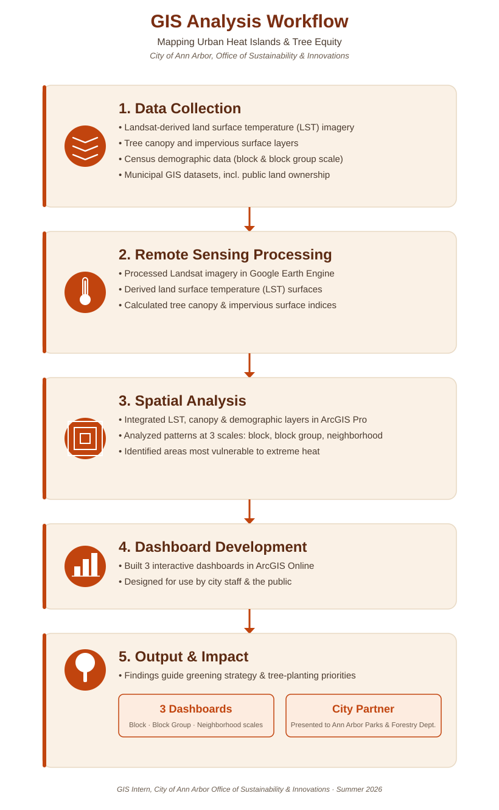

Urban Heat Island Analysis · 2026
Mapping Urban Heat and Tree Equity in Ann Arbor
Using GIS and remote sensing to identify the neighborhoods most vulnerable to extreme summer heat and guide the City of Ann Arbor's tree-planting and greening priorities.
The question
Urban heat islands raise summer temperatures unevenly across a city, and the neighborhoods that experience the highest heat are often those with the least tree canopy and the fewest resources to adapt. The City of Ann Arbor's Office of Sustainability and Innovations needed a clearer, spatial picture of where extreme heat, low canopy, and vulnerable populations overlap, so that limited tree-planting and greening investments could be directed where they would have the greatest impact. My work focused on building that spatial picture at multiple scales, from individual census blocks up to whole neighborhoods, so that both technical staff and the public could explore the patterns and use them in planning conversations.
This project examined the spatial drivers of the urban heat island effect in Ann Arbor, Michigan by integrating Landsat-derived land surface temperature, tree canopy, impervious surface, demographic, and municipal GIS datasets. Through spatial analysis and interactive web dashboards, the project identified priority areas for tree planting and other heat mitigation strategies to support evidence-based sustainability planning.
What I did
Using Google Earth Engine, I processed Landsat imagery to derive land surface temperature and tree canopy indices across the city. I combined these remote-sensing layers with impervious surface data, census demographic data, and municipal GIS datasets, including public land ownership, in ArcGIS Pro to analyze urban heat island patterns at the census block, block group, and neighborhood scales. From that analysis, I built three interactive ArcGIS Online dashboards, one for each spatial scale, so that city staff and residents could explore land surface temperature, tree canopy, impervious surfaces, demographics, and public land ownership together and identify priority areas for heat mitigation.

What I found
The dashboards revealed clear, block-by-block disparities in heat exposure, closely tied to differences in tree canopy and impervious surface coverage. Several block emerged as high priorities for tree-planting and greening investment, where low canopy, high impervious surface, and/or vulnerable communities coincided with elevated land surface temperature. The three dashboards were presented to the City's Parks and Forestry Department, where they are being used to help inform greening strategies and future tree-planting efforts across the city.
What I learned
This project showed me how to take remote sensing outputs that only a specialist could interpret and turn them into interactive tools that non-technical city staff could use directly. I learned how to work across multiple spatial scales without losing the throughline of the analysis, how to integrate demographic and environmental data responsibly, and how much of "impact" in GIS work depends on the last step: building something a partner will actually open, understand, and use.
Deliverables
- Census Block Heat Dashboard → Land surface temperature, canopy, and impervious surface at the finest spatial scale.
- Block Group Heat Dashboard → Heat and canopy patterns paired with demographic indicators.
- Neighborhood Heat Dashboard → Land surface temperature, canopy, and impervious surface at a larger spatial scale.
- Final Report (PDF) → Final report created for the Office of Sustainabilty and Parks and Foestry Departments.